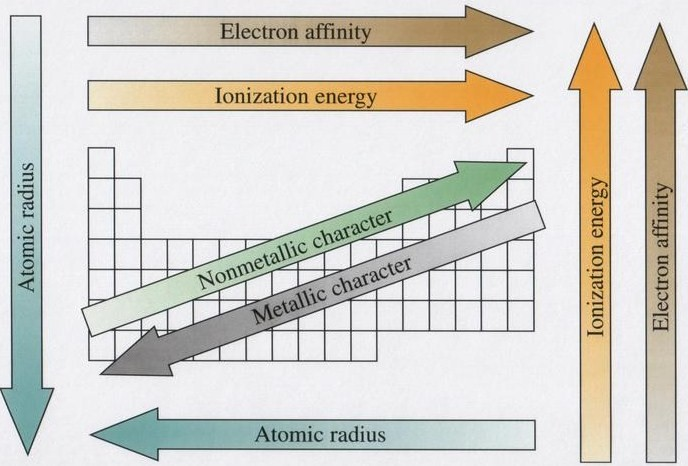
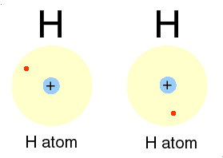
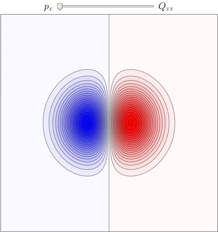

Chapter 7: Periodic Properties of Elements
- Development of Periodic Table
- Mendeleev created early periodic table by common properties
- Henry Moseley determined atomic number by bombarding elements with electrons and determining different frequencies
- Effective Nuclear Charge
- Coulomb’s law: Strength of interaction between two electrical charges depends on the magnitudes of the charges and the distance between them
- Effective Nuclear Charge (Zeff): The positive charge located at the nucleus that affects a net electric field
- Effective Nuclear Charge is less than actual nuclear charge as it factors in other electron repulsions
- Zeff = Z - S
- S: Screening Constant, portion of nuclear charge screened from a valence electron by other electrons in the atom
- S is usually the number of core electrons since it screens the most
- Core electrons: Number of electrons that aren’t valence electrons
- For many electron atoms, the energies of orbitals with the same n value increase with increasing l values (ns < np < nd)
- Increases from left to right across any period, since proton number increases
- Increases slightly going down columns, since the more spread out core electron cloud is less able to screen the valence electrons from nuclear charge
- Size of Atoms and Ions
- Nonbonding atomic radius (van der Waals): shortest distance between two nuclei during collisions is twice the radii of the atoms
- Bonding atomic radius: half the distance between two bonded nuclei
- Increases going down, electrons get farther since quanta increase
- Decreases going right, more protons draws valence electrons closer
- Ionic Radii
- Cations: smaller than parent atoms, number of electron repulsions are reduced
- Anions: larger than parent atoms, increased electron repulsion
- Increases going down
- Isoelectronic: Atoms containing same number of electrons
- More protons results in small ionic radius
- Ionization Energy: Energy needed to remove an electron
- Generally increases going right, as more protons increases effective charge
- Generally decreases going down, as electrons get farther
- Electron Affinity: Energy change that occurs when an electron is added
- Greater the attraction to electron, the more energy is released
- Positive electron affinity: electron will not attach
- Electron affinities of the N group are less negative compared to those on its left or right. This is because these elements have half-filled p subshells, the added electron would increase electron-electron repulsions
- Increases going right more
- Increases going up less
- Metals
- Metallic Character: Greater when an element has more metal characteristics
- Increases going left and down
- Most metals are shiny, conduct heat and electricity, malleable, ductile
- Solid at room temperature except Hg, high melting point
- Tend to have low ionization energies, turning into cations easily
- Most metal oxides are basic and disolve in water to form metal hydroxides
- Due to oxide ion O2- reacting with water to form OH-
- Reacts with acids to form salt and water
- Nonmetals
- Low melting point, poor conductors
- Can be solid, liquid, or gas
- Relatively large, electron affinities results in gaining electrons in reactions
- Most nonmetal oxides are acidic, dissolve in water to form acids
- Nonmetals like sulfur dioxide dissolve in water to form acid rain
- Nonmetal oxides dissolve in basic solutions to form salt and water
- Metalloid
- Intermediate between metals and nonmetals
- Can be used in computer chips, ex. Si
- Alkali Metals (Group 1A)
- Soft metallic solids
- Low density and melting points
- Reacts vigorously with water in an exothermic reaction
- Emits different colored flames
- Alkaline Earth Metals
- Harder and denser than akali
- Less reactive
- Periodic Trends 
Chapter 8: Basic Concepts of Chemical Bonding
- Lewis Symbol 
- Dots for each valence electron placed around the atom
- Octet Rule
- Atoms tend to gain or share electrons until they reach eight valence electrons
- Ionic bonding
- Usually between metals and nonmetals
- Transfer of electrons between elements
- Characteristics: Brittle, High Melting Point, Usually Crystalline, Breaks smoothly due to the electrostatic forces that maintain ions in a well defined structure
- Energetics of Ionic Bond Formation
- Attraction between ions forms a lattice structure
- Lattice energy: Energy required to completely separate one mole of solid ionic compound into gaseous ions
- Magnitude of lattice energy depends on charge of ions, size, and arrangement
- Eel = kQ1Q2d
- Q1 and Q2 : charges on particles
- D: distance between centers
- K: constant, 8.99 x 10^9 J-m/c^2
- Trend is similar to ionic radii
- Magnitude mainly depends on ionic charges
- Born Haber Cycle
- Thermochemical cycle to analyze stability of ionic compounds
- Transition-Metal Ions
- In forming ions, they lose valence shell s electrons first then d electron, since they always lose first from the subshell with the largest value of n
- Most transition metals do not form ions with noble-gas configurations
- Covalent Bonding
- Sharing pairs of electrons
- Attractive forces between the nucleus and electrons overcome electron repulsion
- Multiple Bonds
- Singles Bond: shares one pair
- Double Bond: shares two pairs
- Triple Bond: shares three pairs
- Generally, length of bond decreases as number of shared pairs increases
- Bond Polarity
- Nonpolar covalent bond: electrons shared equally within bond
- Polar covalent bond: one atom exerts greater attraction
- Electronegativity Differences:
- 0 = Nonpolar covalent
- 1.9 = Polar covalent
- 3.0 = Ionic
- Delta plus/Delta minus: Partial positive and negative charges within bonds
- Dipole Moments
- Quantitative measure of the magnitude of a dipole, denoted by u
- U = Qr
- Q = charge, r = distance
- Usually reported in debyes (D) = 3.34 x 10^-30 coulomb-meters (C-m)
- Drawing Lewis Structures
- Sum the valence electrons from all atoms
- Write symbols for atoms, connecting them all with single bonds
- Complete octets
- Place leftover electrons on central atoms, if not enough, try multiple bonds
- Formal Charge
- Formal Charge: charge the atom would have if all the atoms in the molecule had the same electronegativity
- Subtract number of electrons assigned to atom by number of valence electrons in neutral atom (For bonds, half the electrons are assigned to each atom)
- Dominant Lewis structure is generally the one with formal charges closest to zero
- Lewis structure in which negative charges reside on more electronegative atoms is more dominant
- Formal Charges do NOT represent actual charges
- Resonance structures
- Structures that can have multiple placements of bonds
- In Aromatic Benzene, all bonds between C and C have the same length, so each bond is a blend between double and single bond
- In Benzene, resonance is shown by a hexagon with a circle inside or double arrows pointing to each hexagonal structure
- Bond makes Benzene more stable
- Exceptions to Octet Rule
- Odd valence electrons: octet cannot be achieved
- Less than octet: fewer than eight valence electrons per atom
- More than octet: more than eight valence electrons per atom
- Hypervalent: molecules with more than an octet of electrons around central atom
- Only formed for period three central atoms and below, since atom formation is larger
- Strengths of Covalent Bonds
- Bond enthalpy: enthalpy change in breaking one mole into gaseous substance
- D followed by bond represents bond enthalpy ex. D(Cl-Cl)
- Average Bond Enthalpy: taking atomization of molecule and dividing the energy needed into different bond enthalpies
- Bond enthalpy is always positive and always releases energy
- Enthalpy of reaction = Bond enthalpies of bonds broken - bonds formed, by using Hess’s law
- Write molecules within chemical reaction as individual bonds
Chapter 9: Molecular Geometry and Bonding Theories
- Molecular Shapes
- Bond angles: angle made by lines joining nuclei of atoms in a molecule
- VSEPR Model
- Bonding Pair: bonded pair of electrons
- Electron domain: where electrons are most likely found
- Each bond constitutes an electron domain
- Nonbonding Pair: unbonded pair of electrons
- Best arrangement minimizes repulsions between domains
- Electron-domain geometry: arrangement of domains about the central atom
- Molecular geometry: arrangements of atoms in a molecule
- Electron Domain Geometry
- 2 Domains 0 Lone Pairs: Linear
- 2 Domains 1 Lone Pairs: Bent
- 3 Domains 0 Lone Pairs: Trigonal Planar
- 4 Domains 0 Lone Pairs: Tetrahedral
- 3 Domains 1 Lone Pairs: Trigonal Pyramidal
- 2 Domains 2 Lone Pairs: Bent
- 5 Domains 0 Lone Pairs: Trigonal Bipyramidal
- 4 Domains 1 Lone Pairs: Seesaw
- 3 Domains 2 Lone Pairs: T-shaped
- 2 Domains 3 Lone Pairs: Linear
- 6 Domains 0 Lone Pairs: Octahedral
- 5 Domains 1 Lone Pairs: Square Pyramidal
- 4 Domains 2 Lone Pairs: Square Planar
- Effects of Nonbonding Electrons
- Nonbonding pairs have less nuclear attraction resulting in a larger domain
- Nonbonding pairs exert more repulsive force on adjacent electron domains
- Molecules with Expanded Valence Shells
- Axial Positions: 90 degree bond angles, parallel to axis
- Equatorial Domain: 120 degree bond angles
- Nonbonding pairs always occupy equatorial positions in trigonal bipyramidal
- Shapes of Larger Molecules
- Break the molecule into geometries about each central atom
- Molecular Shape and Polarity
- Dipole moments depend on polarity of bonds and geometry of molecule
- Bond Dipole: Dipole moment due to two atoms in the bond
- Dipole moment of polyatomic molecules are vector sum of moles, both direction and magnitude must be considered
- Ex. CO2 has polar bonds in opposite directions making overall dipole moment of CO2 zero, making the molecule nonpolar
- Ex. H2O has two polar bonds however the direction is angled, leading to a nonzero dipole moment, making the molecule polar
- Molecules with symmetrical shapes must be nonpolar
- Covalent Bonding and Orbital Overlap
- Valence-bonding theory: bonding electron pairs are in regions between atoms and nonbonding pairs lie in directed regions of space
- Electron densities of two atoms overlap allowing two electrons of opposite spin to share space forming a covalent bond
- Hybrid Orbitals
- Atomic orbitals mix to form new orbitals called hybrid orbitals
- Hybridization: process of mixing atomic orbitals
- Sp Hybrid Orbital: mixes one s and one p orbital
- Ex. BeF2: Be promotes one of its 2s electron to 2p so it can form two bonds with two fluorines
- Sp2: mixing one s and 2 p orbitals
- Sp3: mixing one s and 3 p orbitals
- Multiple Bonds
- Internuclear axis: Line connecting nuclei
- Sigma bond: Electron density overlap is along internuclear axis
- Pi bond: Sideways overlap of p orbitals perpendicular to internuclear axis
- Weaker than sigma as it has less overlap
- Single bond: one sigma bond
- Double bond: one sigma and one pi bond
- Triple bond: one sigma and two pi bonds
- Resonance and Delocalization
- TO DO
- Molecular Orbitals
- When two atomic orbitals overlap, two MOs form
- Bonding molecular orbital: add wave functions of two orbitals, constructive combination (lower than energy of atomic orbitals)
- Antibonding molecular orbital: formed by canceling electron density in the central region, destructive combination (higher than energy of atomic orbitals)
- Sigma molecular orbitals: MO and antibonding MO are centered about internuclear axis
- Bond order: ½(Bonding electrons - antibonding electrons)
- One bond order: single bond
- Second bond order: double bond
- Third bond order: triple bond
- Period 2 Diatomic Molecules
- Core electrons usually do not contribute significantly to bonding in molecules
- Paramagnetism: unpaired electrons, attracted to magnetic fields
- Diamagnetism: all paired electrons, weak repulsion from magnetic fields
-


AP Chem
AP Chemistry study guide created by Jeffrey Chou.
Based off of Mr. Leung's curriculum and the Baron's AP Chemistry resource.